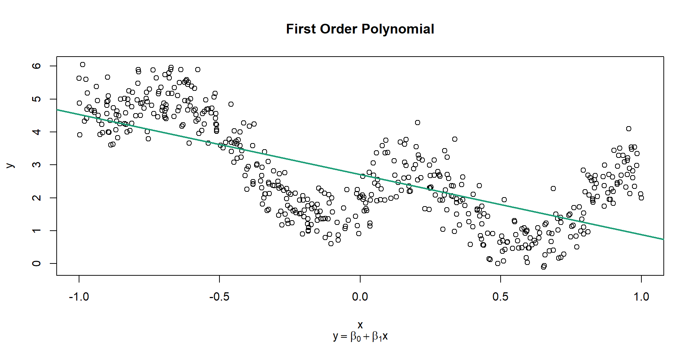
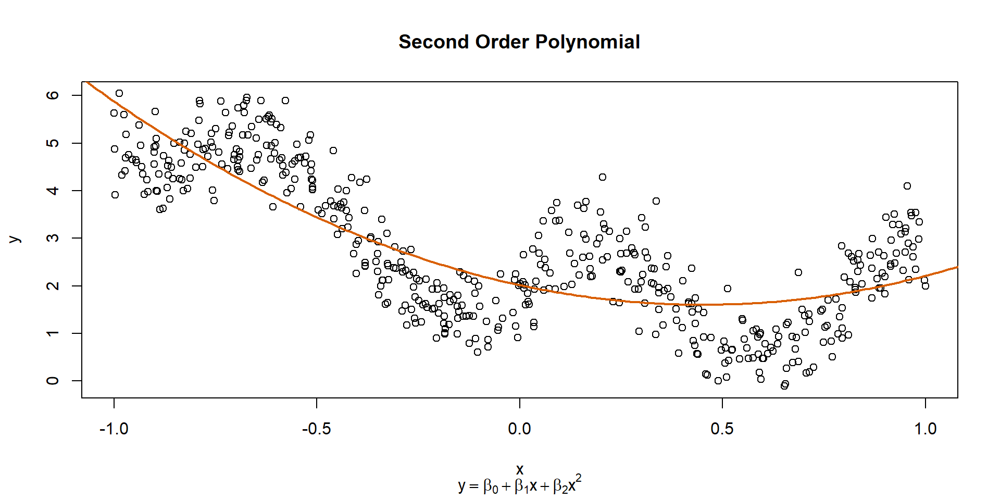
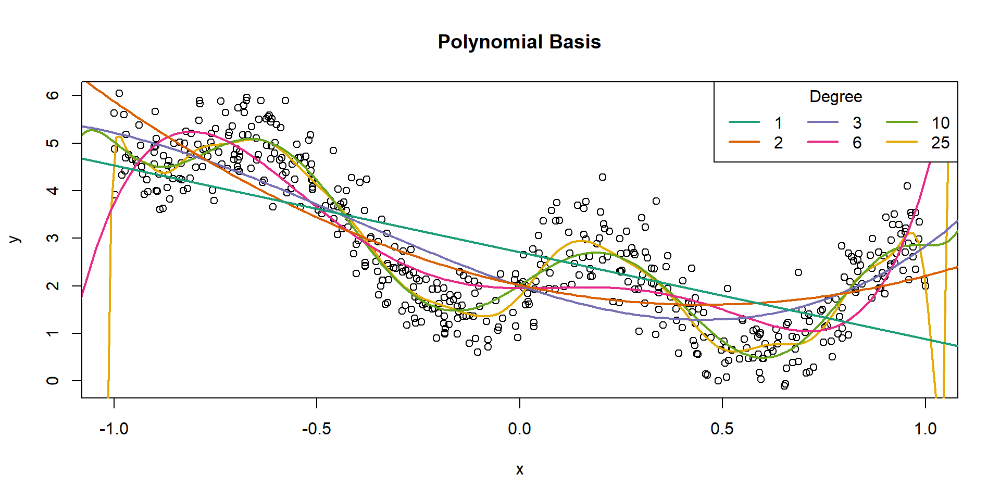
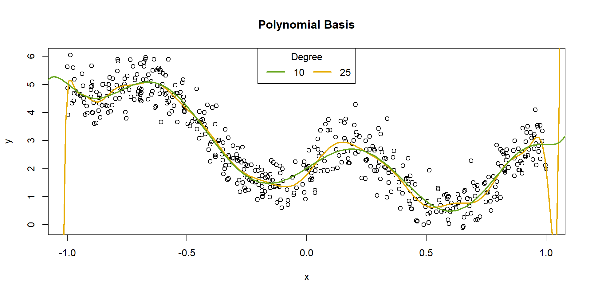

Generalized Additive Models
2026-02-11
Estimating Unknown Functions
General Setup for GAMs
The goal with a GAM is to estimate an unknown function that relates the mean of the random variable to covariates.
\[\mu = f(x)\] \[y \sim Normal(\mu, \sigma^2)\]
If we want to use standard regression methods to estimate \(f\), then we want to represent it such that the equation above becomes a linear model.
General Setup for GAMs
We can do this by choosing a basis of which \(f\) (or an approximation of \(f\)) is an element.
That is, we should choose a basis that is made of basis functions that can approximate nearly any smooth function.
Each of those basis functions gets weighted with a coefficient (i.e., a \(\beta\)) and summed together to represent \(f\).
Basis Expansions
Basis Expansions
A basis you are probably already familiar with is polynomials.
The basis functions for a polynomial basis take the form:
\[x^k ; k \ge 0\]
Basis Expansions
A basis you are probably already familiar with is polynomials.
The basis functions for a polynomial basis take the form:
\[x^k ; k \ge 0\]
So a polynomial basis expansion with two basis functions would be:
\[\beta_0 x^0 + \beta_1 x^1 = \beta_0 +\beta_1 x\]
Basis Expansions
A basis you are probably already familiar with is polynomials.
The basis functions for a polynomial basis take the form:
\[x^k ; k \ge 0\]
So a polynomial basis expansion with two basis functions would be:
\[\beta_0 x^0 + \beta_1 x^1 = \beta_0 +\beta_1 x\]
And a polynomial basis expansion with four basis functions would be:
\[\beta_0 x^0 + \beta_1 x^1 + \beta_2 x^2 + \beta_3 x^3\]
Basis Expansions
Consider these data we looked at before lunch. We can fit an ordinary linear model to these data, using polynomial basis expansions.

Basis Expansions
Basis Expansions
Basis Expansions
Code
Basis Expansions
Code
poly6 <- lm(y ~ x + I(x^2) + I(x^3) + I(x^4) + I(x^5) + I(x^6))
plot(x, y, main = "Sixth Order Polynomial",
sub = expression(y == beta[0] + beta[1]*x + beta[2]*x^2 + beta[3]*x^3 + beta[4]*x^4 + beta[5]*x^5 + beta[6]*x^6))
pred6 <- data.frame(x = seq(-1.2, 1.2, length.out = 200))
pred6$y <- predict(poly6, newdata = pred6)
lines(pred6$x, pred6$y, col = 4, lwd = 2)Basis Expansions
Code
poly10 <- lm(y ~ poly(x, 10))
plot(x, y, main = "Tenth Order Polynomial",
sub = expression(y == beta[0] + beta[1]*x + beta[2]*x^2 + beta[3]*x^3 + beta[4]*x^4 + beta[5]*x^5 + beta[6]*x^6 + beta[7]*x^7 + beta[8]*x^8 + beta[9]*x^9 + beta[10]*x^10))
pred10 <- data.frame(x = seq(-1.2, 1.2, length.out = 200))
pred10$y <- predict(poly10, newdata = pred10)
lines(pred10$x, pred10$y, col = 5, lwd = 2)Basis Expansions
Code
poly25 <- lm(y ~ poly(x, 25))
plot(x, y, main = "Twenty-fifth Order Polynomial",
sub = expression(y == beta[0] + beta[1]*x + beta[2]*x^2 + ... + beta[24]*x^24 +beta[25]*x^25))
pred25 <- data.frame(x = seq(-1.2, 1.2, length.out = 200))
pred25$y <- predict(poly25, newdata = pred25)
lines(pred25$x, pred25$y, col = 6, lwd = 2)Basis Expansions
Basis Expansions
You may have noticed two things along the way here.
- The higher degree polynomials predict extreme values at the edges.
- We didn’t get much improvement from a 10th-degree polynomial to a 25th-degree polynomial, even though we estimated an extra 15 parameters.
Basis Expansions
While we use them all the time, polynomial basis expansions aren’t actually all that great for our problem.
- They often predict extreme values with small extrapolations.
- They can oscillate wildly in between data points (so can be bad for interpolation).
Basis Expansions
We need some method to obtain parsimony. Just from the eye test, it doesn’t seem like it’s worth it to use a 25th-degree polynomial over a 10th-degree polynomial.

Basis Expansions
You may have noticed two things along the way here:
- The higher degree polynomials predict extreme values at the edges.
- Solution: spline basis
- Solution: spline basis
- We didn’t get much improvement from a 10th-degree polynomial to a 25th-degree polynomial, even though we estimated an extra 15 parameters.
- Solution: penalize for complexity with a smoothing parameter
Splines
Cubic Regression Splines
- A spline is just a set of weighted basis functions. Splines are constructed from piecewise functions that fit together smoothly (without sharp edges).
- It turns out, cubic splines are the smoothest possible interpolants through any set of data. (See Chapter 5, p. 197 of Wood 2017). Cubic splines are sections of cubic polynomials between every data point.
- Cubic regression splines are sections of cubic polynomial, defined piecewise between user-defined knots.
{kind=link}
Cubic Regression Splines
Here are the 10 basis functions plotted separately:
{kind=link}
Cubic Regression Splines
We can give each one a weight (a \(\beta\) coefficient) and sum them up. For example, we can weight all 10 with \(\beta_i = 1\).
{kind=link}
Cubic Regression Splines
We can alternate \(\beta\)s between -1 and + 1.
{kind=link}
Cubic Regression Splines
We can try a bunch of other values, like this:
| \(\beta_1\) | \(\beta_2\) | \(\beta_3\) | \(\beta_4\) | \(\beta_5\) | \(\beta_6\) | \(\beta_7\) | \(\beta_8\) | \(\beta_9\) | \(\beta_{10}\) |
|---|---|---|---|---|---|---|---|---|---|
| 5 | -2 | -3 | - 5 | 1 | 2 | 4 | 2 | 0 | -3 |
{kind=link}
Cubic Regression Splines
We can try evenly spaced \(\beta\)s, for example, ranging from 0 to 2.
{kind=link}
Smoothing
Penalizing Complexity
Now, back to the problem of parsimony. How can we decide how many basis functions (or knots) sufficiently represent our function?
Penalizing Complexity
- Earlier today, we focused on using maximum likelihood estimation to estimate \(\hat{\boldsymbol{\beta}}\).
- We could do that, but there’s a good chance we don’t need all the basis functions we might propose.
- Such flexible models are prone to overfitting.
- We could use model selection (e.g., AIC) to decide which of the basis functions to keep in our model.
- The problem is that a basis with 9 evenly spaced knots is not nested within a basis with 10 evenly spaced knots.
- Instead, we could introduce a penalty to our fitting criterion.
- Rather than finding \(\hat{\boldsymbol{\beta}}\) that maximizes the (log) likelihood, we find the \(\hat{\boldsymbol{\beta}}\) that maximizes the log-likelihood minus a penalty.
Penalizing Complexity
The penalty should be applied to \(f\) based on how “wiggly” it is.

Penalizing Complexity
Wiggliness (the proper term) is defined by the second derivative of the function \(f\).
\[\int_{\mathbb{R}} [f^{\prime\prime}]^2 dx = \boldsymbol{\beta}^{\mathsf{T}}\mathbf{S}\boldsymbol{\beta} = \large{W}\]
It can be written as a function of the vector \(\boldsymbol{\beta}\) and a penalty matrix, \(\mathbf{S}\), which is specific to the basis chosen.
For simplicity, we’ll refer to the wiggliness as \(W\).
Penalizing Complexity
Rather than estimating the parameters of the model with maximum likelihood:
\[\hat{\theta} = \mathrm{arg\ max}\ \mathcal{L}(\theta | \mathbf{y})\]
We now use penalized maximum likelihood:
\[\hat{\theta} = \mathrm{arg\ max}\ [\log(\mathcal{L}(\theta | \mathbf{y})) - \lambda W]\]
But we’re still left with a parameter \((\lambda)\) that we need to choose.
We will refer to \(\lambda\) as the smoothing parameter.
Penalizing Complexity
We can choose the smoothing parameter manually.
# No penalty
sm_no <- gam(y ~ s(x, bs = "cr", k = 50), data = dat,
method = "REML", sp = 0)
# Low penalty
sm_lo <- gam(y ~ s(x, bs = "cr", k = 50), data = dat,
method = "REML", sp = 10)
# Medium penalty
sm_med <- gam(y ~ s(x, bs = "cr", k = 50), data = dat,
method = "REML", sp = 1000)
# High penalty
sm_hi <- gam(y ~ s(x, bs = "cr", k = 50), data = dat,
method = "REML", sp = 1000000)
# Extreme penalty
sm_ex <- gam(y ~ s(x, bs = "cr", k = 50), data = dat,
method = "REML", sp = 100000000)Penalizing Complexity
We can choose the smoothing parameter manually.
Code
pred <- data.frame(x = seq(-1, 1, length.out = 500))
# No penalty
pred$none <- predict(sm_no, newdata = pred)
# Low penalty
pred$low <- predict(sm_lo, newdata = pred)
# Medium penalty
pred$medium <- predict(sm_med, newdata = pred)
# High penalty
pred$high <- predict(sm_hi, newdata = pred)
# Extreme penalty
pred$extreme <- predict(sm_ex, newdata = pred)
# Pivot longer
library(tidyr)
pred_long <- pivot_longer(pred, none:extreme,
names_to = "Penalty",
values_to = "y") %>%
mutate(Penalty = factor(Penalty, levels = c("none",
"low",
"medium",
"high",
"extreme")))
# Plot
ggplot() +
geom_point(data = dat, aes(x = x, y = y)) +
geom_line(data = pred_long, aes(x = x, y = y, color = Penalty),
linewidth = 2) +
theme_classic(){kind=link}
Penalizing Complexity
But we can also estimate it from the data.
According to Gavin Simpson, for reasons of numerical stability, we should use restricted maximum likelihood (REML) estimation if we want to estimate \(\lambda\) as well as \(\boldsymbol{\beta}\).
We can do that in R with mgcv::gam(..., method = "REML").
Penalizing Complexity
After estimating our parameters with REML, the fitted function \((\hat{f})\) has fewer effective degrees of freedom (EDF) than an unpenalized function would have.
Your choice of \(k\) (the number of knots/basis functions) sets the upper limit on complexity, such that \(\mathrm{EDF} < k\).
GAMs in Practice
Choosing Knots
As long as we choose \(k\) to be large enough, GAM theory tells us that we will have a good approximation of \(f\).
However, increasing \(k\) increases computation time. A dataset with \(n\) data points takes \(\mathcal{O}(nk^2)\) operations to compute. So computation time is roughly proportional to the square of \(k\). Doubling \(k\) quadruples fitting time.
Choosing \(k\) is thus an important user choice. The mgcv::gam() default of k = 10 is completely arbitrary.
Choosing Knots
A good approach is to try a reasonably large number of knots and then evaluate your choice.
mgcv offers k.check() to evaluate whether your choice was sufficient.
See mgcv help files for further discussion of choosing \(k\). See ?k.check and ?choose.k.
Basis Choices
Cubic Regression Splines
s(x, bs = "cr")
Easy to understand. Knots are placed evenly along the data (by quantiles).
Cyclic Cubic Regression Splines
s(x, bs = "cc")
Appropriate for circular predictors, such as time of day or day of year. The function will have the same value, first derivative, and second derivative at both ends of the circle (e.g., 00:00 and 24:00 h).
Basis Choices
TPRS
s(x, bs = "tp")
Full thin plate splines are an elegant and general solution to the spline problem, but they are very computationally intensive (because \(k = n\)).
They do not require specifying knot locations and are also appropriate for multidimensional smooths.
However, thin plate regression splines are a rank-reduced version of the full thin plate splines, which truncates the basis “in an optimal manner.” See ?smooth.construct.tp.smooth.spec for some details.
Essentially, they have many of the best features, but are less computationally intensive.
This is the default basis s(x).
Basis Choices
Random Effects
s(x, bs = "re")
It turns out that there is an equivalence between the complexity penalty for a penalized spline and Gaussian random effects.
Software that can fit (G)LMMs can be used to fit GAMs and software that can be used to fit GAMs can be used to fit (G)LMMs.
See also Pedersen et al. (2019) for more information on hierarchical GAMs.
Resources
Links
- GAMs in R, by Noam Ross
- GAM Physalia-Courses Course, by Gavin Simpson
- From the bottom of the heap, blog by Gavin Simpson
- Generalized Additive Models, ebook by Michael Clark
- Pedersen et al. (2019), an excellent paper explaining GAMs and hierarchical GAMs.